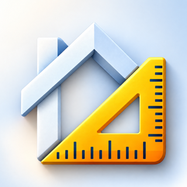
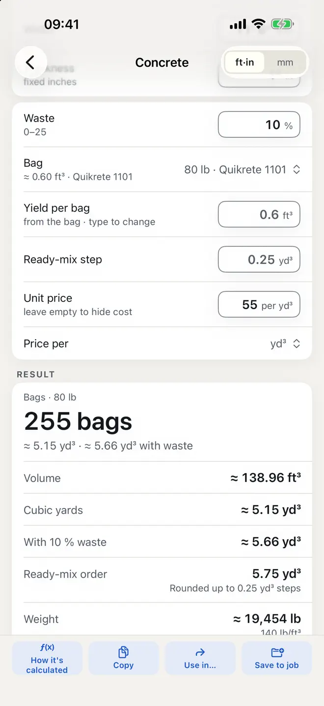
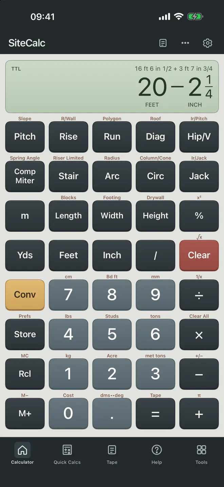
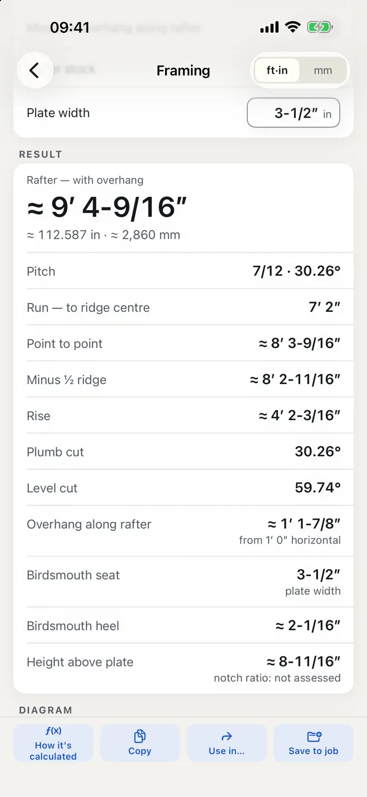
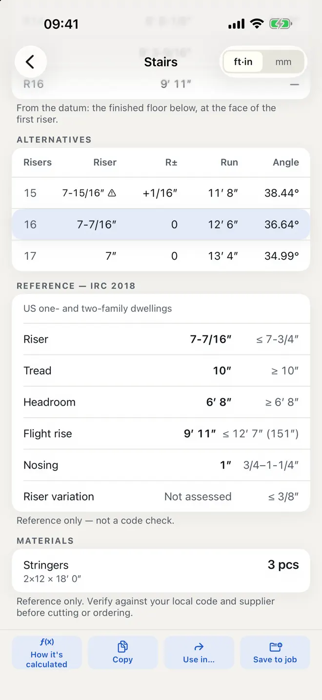

Feet, inches and fractions. Right the first time.
Add 16′ 6-1/2″ to 3′ 7-3/4″ and read the answer three ways at once: feet-inch, decimal inches and millimetres. SiteCalc is a construction calculator for carpenters, contractors and serious DIYers — count the concrete bags, lay out the stringer, order the shingles.
iPhone and Android · No signal needed · No account


Six tools, one app
The calculator in your tool pouch, plus the ones you wish it had
Feet-Inch
A keypad that takes 9-5/8″, 10′ 3.5″, 5 ft 14 in or 2400 mm as you go, with a running paper tape. Divide a span into equal marks, space balusters or joists evenly.
Concrete
Slabs, footings, columns, tubes and steps in cubic yards or metres. Bags by brand yield, truck loads rounded up, waste included.
Framing
Studs, plates and headers; joists; common, hip, valley and irregular rafters with the birdsmouth worked out; jack rafter lists; rake walls.
Stairs
Risers, treads, both stringer lengths clearly labelled, the first-riser cut, a running-measurement table, and the code limits beside the results.
Roof
Pitch in x/12, degrees or percent; area, squares, shingles, ridge cap, underlayment, tiles and sheets.
Convert
Exact factors for length, area, volume, mass and density. Switch to metric and the whole app follows.
Every number shows its work
Tap any result to see how it was calculated
The formula with your numbers in it, the convention it used, and where that convention comes from.
How it works
Made for the site, not the cloud


Your data
No account, no ads, no signal needed
- Works offline. Nothing needs a signal on site.
- Your jobs and calculations stay on your phone.
- Back up to a file whenever you like.
- No account and no ads.
Reference only. Verify against your local code and supplier before cutting or ordering.
Questions
Before you download
Can SiteCalc add feet, inches and fractions?
Yes. Type lengths the way you say them — 16′ 6-1/2″, 9-5/8″, 5 ft 14 in or 2400 mm — and read every result in feet-inch, decimal inches and millimetres.
Does it calculate rafters and stairs?
Yes. Common, hip, valley, jack and irregular rafters with the birdsmouth, and stairs with risers, treads, stringer lengths and the first-riser cut.
Does it work in metric?
Yes. Switch to metric and the whole app follows, with defaults for the US, UK and Australia.
Does SiteCalc work without a signal?
Yes. No account, no ads and no signal needed.
Can I see how a result was calculated?
Yes. Tap “How it's calculated” on any result to see the formula with your numbers in it and the convention it used.
Which devices and languages does SiteCalc support?
iPhone (iOS 17 or later) and Android. The app is in English.
- Made for
- Carpenters, framers, contractors, builders and serious DIYers working in feet-inch-fraction or metric
- Platforms
- iPhone (iOS 17 or later) · Android
- Languages
- English
- Category
- Utilities
- Developer
- Ho Van Dai
- Page updated